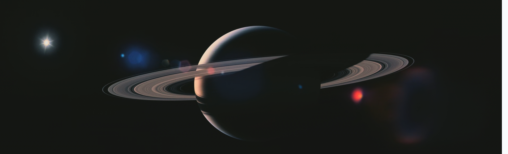
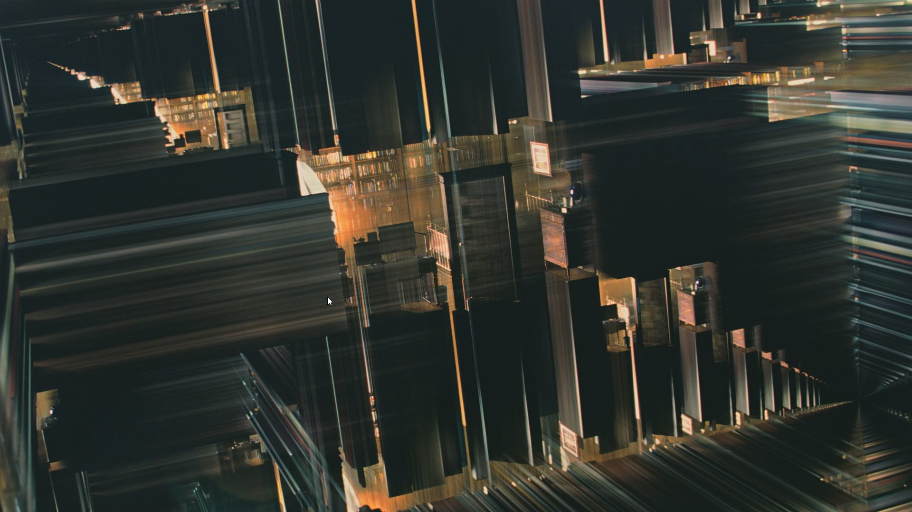

Interstellar
PG-13 2014 ‧ Sci-fi/Adventure ‧ 2h 49m
Interstellar is more anthropocentric, watching it for the 10th time, I realized it. I loved Han Zimmer’s musical, it was so aptly describes each and every situation, mostly the important ones, the tone of “no time to caution” rightly along on docking after visiting the Mann’s planet was incredibly genius work.
I’m Analysing this movie of what I understood from it.
This movie’s the dust apocalypse scene is based on Dust Bowl ( early 1930s at US central like Colorado and other nearby states) . It actually interviewed few of the survivors, that came in between the movie.
Background
This movie is set on a near apocalyptic earth, where dust consumes everything, mainly soil’s nitrogen, impacting planet’s ecology, decreasing the oxygen supply for humans and inducing food scarcity. The school’s teaching the wrong history model is a pretty significant change in society’s mindset, where survival at earth is more important than getting ideas of leaving this, and prioritizing farming activities precedes that of engineer’s curiosity or aspirations. The institutions of the society is changed , engineering activities are looked with disdain and unsustainable than farming. Cooper’s ideas are not useful. But the story goes toward the place where he attains purpose, of his life journey.

Gravity Signs Cooper to pilot
Cooper didn’t like to live in this societal institutions, which curbs his ideas and his purpose and forces him to do farming. He wants to fulfill something that gives him the will to live, aside for his children. it’s clear from his statement that “we used to look up at the sky and wonder at our place in the stars. Now we just look down, and worry about our place in dirt”. The clues presented in Murph’s room was the sign, it gave them the coordinates to the NASA location. Here the ‘it’ means the beings from five dimensional, gravitational anomalies or ghosts. From there on, it’s easy to see, why he decides to leave even after his daughter’s objection to it.
Journey to Wormhole and Other planets
Astronauts travel through wormhole, that they discovered during the Lazarus mission, this mission is the preset for the planets that they are visiting, Miller, Edmunds and Manns. They travel through endurance with the help of TARS/CASE.

They visit the planets, Miller and Mann's, one out of rationality and other out of Love, leading to betrayal, and the heart beating scene of ‘no time to caution’.
With limited fuel to go, TARS and CASE charts a course that slingshots the endurance to Miller’s planet, where Cooper Decides to drop off, as the endurance will need less weight to travel Miller’s, and He wants to have a last chance at saving humanity, goes inside the blackhole.


Tesseract and Godliness
The tesseract mentioned here, is a 5 dimensional being that Cooper says a being from future, this description aptly marks a godly powers to the humans, assumes that it is humans not another being, which begs the question of human evolution. I find it hard to reconcile with this notion, but what can we say, there is a distant possibility. We could be a interconnected being. Interconnected with everything and at peace at the same time , just like the Schrödinger’s cat theory.
